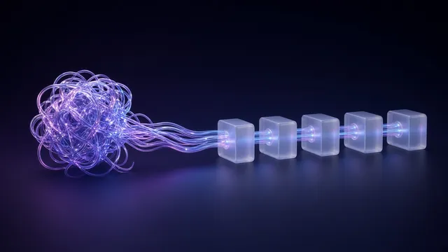
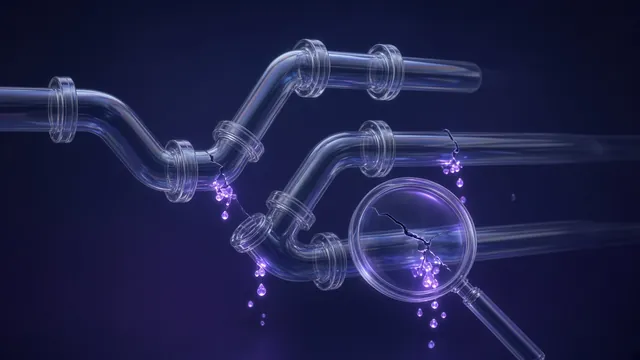

Без вас ничего не решается
Вы — главный диспетчер. Согласования, вопросы и исключения снова возвращаются к вам.
Бизнес-архитектор · люди, процессы, ИИ
Помогаю найти узкие места в управлении, выстроить понятные процессы и роли, разгрузить команду и подключить ИИ там, где он действительно полезен.
С какими задачами ко мне приходят
Когда усилий всё больше, а ясности всё меньше, пора посмотреть, как устроена сама работа.
Вы — главный диспетчер. Согласования, вопросы и исключения снова возвращаются к вам.
Каждый делает свою часть в своей логике. Кто отвечает за общий результат — до конца не понятно.
Люди работают на пределе, сроки сдвигаются, одни и те же ошибки повторяются.
Новичков долго вводят в работу. Уходит ключевой сотрудник — с ним уходит часть системы.
Правила лежат в папках, обучение прошло, а привычный способ работы остался прежним.
Сервисов много, сотрудники экспериментируют, а устойчивого рабочего процесса пока нет.
Начинаем с разбора: где возникает сбой, что его поддерживает и что имеет смысл менять первым.
Принцип
ИИ усиливает то, что уже устроено. Если в процессе бардак, нейросеть просто ускорит бардак.

Мой подход
За одной и той же жалобой «люди не справляются» могут стоять разные причины. Я смотрю, как связаны цели, роли, процессы и инструменты — и что мешает им работать вместе.
Роли, ответственность, управленческие навыки, обучение.
Последовательность работы, передача задач, стандарты качества, контроль.
Конкретные задачи для цифровых помощников, правила использования, проверка результата.

Как ищу причину — на примере жалобы «люди не справляются»
Примеры работы
Цифры — только из отчётов по проектам. Ранние проекты — работа в штате, роль указана в каждом проекте.
Результаты в цифрах по отчётам проектов
ИИ-решения для бизнеса
Ставлю ИИ туда, где он действительно экономит время и деньги. Одно решение работает у клиента, одно — мой рабочий инструмент, одно в обкатке. Похожее соберу под ваш бизнес на заказ.
Отвечает клиентам в чате сайта и в Telegram круглосуточно, уточняет задачу, подбирает по каталогу и передаёт менеджеру готовую заявку. Внедрён у ГлавПос — поставщика корпоративных подарков и сувениров, работает на NextBot.
По отчёту о работе бота, выборка — 62 диалога.
Сейчас тестирую. За несколько минут переписки бот расспрашивает о ситуации, находит, где в бизнесе теряются деньги — привлечение заявок, процессы, управление людьми или готовность к ИИ, — и предлагает первые шаги.
Похожего бота-диагноста соберу на заказ под ваш бизнес: ваши вопросы, ваша логика, запись к вам на консультацию.
Мой собственный рабочий инструмент: на нём я веду свои каналы. Из одной идеи — текстом или голосом — делает статью, посты, карусель, иллюстрации и короткое видео. Я только утверждаю в Telegram, публикация идёт по расписанию. Собран на n8n.
Похожий конвейер соберу на заказ — под ваши темы, голос и площадки.
Форматы работы
Иногда достаточно точного разбора. Иногда нужна последовательная пересборка. Цены — ориентир; итог согласуем до начала работы.
Кому: когда проблем много и непонятно, за что браться первым.
Разбор конкретной ситуации: берём самый нагруженный процесс, раскладываем его по шагам и находим, где на самом деле буксует.
Кому: компания выросла, а устройство работы перестало выдерживать нагрузку.
Пересобираем выбранный участок: роли и зоны ответственности, процессы «как есть → как должно быть», регулярный менеджмент, ИИ-помощники для команды.
Кому: хочется перейти от отдельных экспериментов к рабочим сценариям.
Базовый практикум для 2–3 сотрудников на задачах компании: отчёты, регламенты, письма, работа с базой знаний.
Кому: нужна внешняя точка опоры, чтобы увидеть ситуацию со стороны.
Индивидуальный онлайн-формат: 4 встречи в месяц и поддержка между ними. Разбираем решения, людей, процессы и ход изменений.
Как начинается работа
Вы кратко описываете, что происходит. На сессии раскладываем самый нагруженный процесс по шагам.
Где сбой, что его поддерживает и что менять первым.
Роли, процессы, правила. ИИ — там, где он окупается.
Изменения приживаются в работе команды, по ходу корректируем.
Короткий разговор, чтобы понять задачу и подобрать формат. Ни к чему не обязывает.
Отдельная платная работа: глубокий разбор ситуации и карта приоритетов.
Давайте знакомиться
Мой опыт соединяет HR, корпоративное обучение, бизнес-процессы и организационные изменения. Сегодня к этой базе добавились ИИ-инструменты и цифровые помощники.
Я умею смотреть на компанию сверху — и разбираться, что происходит в ежедневной работе. Где неясна ответственность. Где перегружен руководитель. Где человеку нужен понятный алгоритм, а где задачу уже можно передать технологиям.
Для меня важно, чтобы решения приживались: были понятны команде, учитывали реальную нагрузку и помогали двигаться дальше.
Ваш бизнес-механик на нейронках
Опыт
Тренер учебных центров: программы по продажам и имиджу.
Учебные центры «Arbor Mundi» и сети «Гастроном-Эконом» (11 регионов). В Arbor Mundi розничные продажи выросли ×4.
ТОПСЕРВИС: обучение и развитие персонала, ROI 1850% годовых. Затем антикризисный проект в дистрибуции: чистая прибыль выросла ×10.
Заместитель директора по персоналу: 14 регионов, рост с 6 до 10 тыс. сотрудников.
Оценка руководителей и перестройка процессов в 5 компаниях: инжиниринг, дистрибуция, розница, оптика.
Собственник и генеральный директор дистрибьютора.
Нейропродавец для ГлавПос, свой контент-завод, автоматизация на n8n.
Образование и квалификацияПсихолог, педагог и тренинг-менеджер: три диплома с отличием, переподготовка ТГУ, с 2025 года — практика внедрения ИИ и n8n.
Отзывы участников
«Думаю, что управляющие стали более собранными, выдержанными. Планируют свое рабочее время, ставят приоритеты. Результат виден.»
«Тренинг, живой, яркий и результативный. …понять, что в мире существуют не только два мнения — Ваше и неправильное.»
«Я провел переговоры с применением различных техник и методик коммуникативности и делового общения. В результате заново удалось наладить хорошие отношения.»
«В работе стала применять методику планирования, легко стало говорить «нет», что главное, обосновано, аргументировано.»
Выступления и корпоративные практикумы
Доклад · мастер-класс · корпоративный практикум. С примерами, разбором задач и инструментами, которые можно попробовать в работе.
Аудитория уйдёт с пониманием, какие решения можно делегировать и как закрепить это в ролях и правилах.
Как выбрать первый сценарий, оценить пользу и не утонуть в сервисах.
Живые примеры помощников, которые снимают рутину, и правила проверки их работы.
Как собрать базу знаний и маршрут адаптации, которые работают без ручного сопровождения.
Как устроить работу так, чтобы обычная команда стабильно давала сильный результат.
«Светофор» автоматизации: что отдать нейросетям, где нужен гибрид, а куда ИИ пускать рано.
 28 января 2026 · 5 мин чтенияСистема бьёт класс
28 января 2026 · 5 мин чтенияСистема бьёт классПочему в эпоху ИИ «гении» больше не рулят и выигрывают компании с понятными, повторяемыми процессами и встроенным в них ИИ.
Читать → 7 мая 2026 · 7 мин чтенияДиректора в ловушке: почему управленцы буксуют на фоне ИИ
7 мая 2026 · 7 мин чтенияДиректора в ловушке: почему управленцы буксуют на фоне ИИПочему управленцы буксуют на фоне ИИ-проектов и как выйти из ловушки ручного управления и незаменимых людей.
Читать → 31 мая 2026 · 7 мин чтенияПочему ваш отдел продаж живёт в постоянном завале
31 мая 2026 · 7 мин чтенияПочему ваш отдел продаж живёт в постоянном завалеГде теряется клиент между заявкой и оплатой и как живая карта пути клиента делает продажи управляемыми.
Читать →Перед первым шагом
Да. Достаточно описать, что не устраивает: задержки, перегруз, повторяющиеся ошибки или зависимость от конкретных людей. Уточнение задачи — часть начала работы.
Нет. Сначала важно понять причину сбоя. Если задачу лучше решают изменения процесса, распределение ответственности или обучение — начнём с них.
Да: диагностику, сопровождение и часть командной работы можно провести онлайн. Формат проектной работы и очных встреч обсуждаем под задачу.
Короткое описание бизнеса, своей роли и ситуации, которую хотите изменить. Полезно привести один конкретный пример и рассказать, что уже пробовали.
Ориентиры указаны в форматах работы. Стоимость диагностики засчитывается, если после неё мы переходим к проекту. Для проекта итоговая стоимость зависит от масштаба участка, числа участников, сроков и степени моего участия во внедрении — поэтому объём определяем после диагностики и фиксируем до старта.
Начнём с вашей задачи
Кратко опишите ситуацию. Я предложу, с какого формата работы имеет смысл начать.